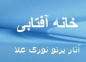

پذيرش > سایت نوشته ها > هر دَم از این باغ بَری (خبر تلخی) می رسد...
 فیلترینگ سایت های زنان فیلترینگ سایت های زنان

 هر دَم از این باغ بَری (خبر تلخی) می رسد... هر دَم از این باغ بَری (خبر تلخی) می رسد...
1 خرداد 1387 - خانه آفتابی - پرتو نروی اعلا - نسخه قابل چاپ
خانه آفتابی- پیش از این فیلترینگ رسانه های کمپین یک میلیون امضاء، محدود به چند سایت مطرح بود. اما در ۲۸ اردیبهشت ماه ۱۳۸۷، حکومت اسلامی در اقدامی همزمان، 13 سایت و وبلاگ کمپین، در سراسر ایران و خارج از ایران فیلتر نمود. اسامی این سایت ها و وبلاگ ها عبارتند از: کمپین یک میلیون امضاء در آلمان، کالیفرنیا، قبرس، کویت، سایت مردان برای برابری، فعالان کمپین در مشهد، و همچنین سایت های کمپین یک میلیون امضاء در اراک، اصفهان، رشت، زاهدان، شیراز و کردستان به طور همزمان «فیلتر» شدند.
لازم به یادآوری است که تاکنون اکثر وب سایت های متعلق به کمپین یک میلیون امضا، یا سایت های مرتبط با آن فیلتر شده است. برای نمونه سایت «زنستان» پس از 7 بار فیلتر شدن و تغییر آدرس، سرانجام به طور کامل مسدود شد. وب سایت «کانون زنان ایرانی» 3 بار، سایت «تغییر برای برابری»، 11 بار، سایت مدرسه فمینیسیتی، کردها در کمپین، و کمپین در شیرازهر کدام دوبار و ویلاگ کمپین در آذربایجان یک بار فیلتر شده است. چرا؟
 چرا اعضاء کمپین و هواداران آن در تجمعات مسالمت آمیزی که هدفی جز درخواست رفع قوانین تبعیض آمیز (در چارچوب همان قوانین فقهی اسلام) علیه زنان بود، چنان سرکوب و دچار ضرب و شتم، و دستگیری و زندان، و محکومیت به شلاق و ممنوع الخروج شدن و پرداخت وثیقه های کلان برای آزادی موقت خویش شدند؟ چرا اعضاء کمپین و هواداران آن در تجمعات مسالمت آمیزی که هدفی جز درخواست رفع قوانین تبعیض آمیز (در چارچوب همان قوانین فقهی اسلام) علیه زنان بود، چنان سرکوب و دچار ضرب و شتم، و دستگیری و زندان، و محکومیت به شلاق و ممنوع الخروج شدن و پرداخت وثیقه های کلان برای آزادی موقت خویش شدند؟
چرا رژیم اسلامی در ایران، فعالیت آشکار و صلح جویانه اعضاء کمپین و هوادارانشان را در پخش آگاهی میان زنان و مردان در جهت آشنایی با حقوق انسانی زن یا در جمع آوری ی امضاء در اماکن عمومی و در روز روشن، "اقدام علیه امنیت کشور" اعلام کرده و با آنان همچون گروه های مخفی سیاسی و چریک های مسلح برخورد می کند؟
چرا رژیم اسلامی در ایران، در برابر حرکت آشکار و برابری خواه ِ کمپین یک میلیون امضاء که نه هدف و نه توان ِ دگرگونی ی رژیم را دارد، و نه مخالف دین اسلام و مذهب شیعه است، واکنش تند نشان می دهد و حتی تمام سایت ها و وبلاگ های آنان را که فقط سرشار از روشنگری نسبت به وضع زنان تحت ستم و آگاه ساختن زنان از حقوق انسانی شان است، سانسور و سرکوب و فیلتر می کند؟
چرا رژیم اسلامی در ایران، بر تمام پیشرفت ها و دست آوردهای قابل ملاحظه زنان در همه زمینه ها و رشته ها چشم برمی بندد، و تمام سعی خود را در جهت راندن زنان به خانه ها، یا فروبردن چند تارِ موی سر به زیر حجاب، یا قد روپوش یا نوع کفش و جوراب زنان کرده است؟
چرا رژیم اسلامی در ایران برای جلوگیری از راه یافتن دختران به دانشگاه ها طرح سهمیه بندی ی جنسیتی را مطرح می کند؟
چرا سن ازدواج برای دختران به ۱۳ و به گفته ای ۹ سال تقلیل یافته است؟ چرا ازدواج یک دختربچه با مردی همسن پدر بزرگش تقبیح و غیرقانونی اعلام نمی شود؟ چرا آزار و اذیت زنان ممنوع نیست و مجازات قانونی ندارد؟ چرا مرد می تواند به دلخواه خود زنش را طلاق دهد، یا همسر دوم اختیار کند؟ چرا مادران مطلقه نباید حق حضانت اطفال خود را داشته باشند؟ چرا مادران بی سرپرست، از سرپناه و حقوق دولتی و بیمه درمانی ی مجانی محروم اند؟ چرا اجازه ازدواج یک دختر بالغ و عاقل به دست پدر یا قیم اوست؟ چرا زنان بدون اجازه کتبی شوهر یا پدر حق خروج از کشور و سفر به خارج از ایران را ندارند؟ چرا قضاوت دو زن برابر با قضاوت یک مرد است؟ چرا پول خون زن نصف پول خون مرد است؟ چرا دختر نصف پسر ارث می برد؟ چرا از نظر رژیم اسلامی، زن موجودی خطرناک است؟ چرا رژیم اسلامی در ایران از بدو قدرت گرفتن، با توجه به نقش عظیم زنان در انقلاب، کوشید تا بهر طریق آنان را سرکوب کند و به خانه ها براند؟ چرا رژیم حجاب را برای زنان اجباری کرد؟ چرا زنان را از داشتن حق قضاوت محروم کرد؟ چرا ختنه زنان که اخیراً بوضوح در کردستان شناخته شده، ممنوع نمی شود؟ آزادی ی زن چه تضادی با رژیم اسلامی در ایران دارد؟
چرا برخی زنان مُجری قوانین ضد زنی هستند که مردان آن ها را وضع کرده اند؟ چرا برخی زنان حتی مادران بر دختران خویش سخت می گیرند و تا حد سرکوب آنان عمل می کنند؟ چرا برخی زنان تن به همسر دوم بودن یا رابطه داشتن با مرد متأهل می دهند؟ چرا برخی از زنان خواسته یا ناخواسته تابع مردان هستند؟
چرا برخی از مردان باسواد و انسان دوست و مساوات طلب، معتقد به تساوی زن با مرد نیستند؟ چرا برخی از مردان با نهضت های زنان مخالف اند؟ چرا برای بسیاری از مردان نهضت زنان کلمه ای خطرناک است که آشنایی دختران و زنان خود را با آن ممنوع می کنند؟ چرا برخی از مردان، زن را جزو ملک طلق خود می دانند؟
ماهیت رژیم اسلامی در ایران چیست؟ آیا امکان روی کار آمدن چنین رژیمی در کشورهای دمکراتیک و آزاد وجود دارد؟ چرا آمیختگی ی دولت با دین یا ایدئولوژی های وحدت خواه، به هر شکل، خطرناک و مضر به حال جامعه است؟
سرچشمه مخالفت زن در کجاست؟ آیا واقعاً مغز زنان کوچکتر از مغز مردان است؟ آیا شعور و قدرت درک زنان کمتر از مردان است؟ آیا زنان نیازمند قیم هستند؟
دها پرسش دیگر نظیر سئوالات فوق ما را موظف می کند تا در پی ی یافتن پاسخ های مناسب برای آنها باشیم.
خانه آفتابی
ارسال به
بالاترین
،
توییتر
،
فریندفید
،
فیسبوک
در همين بخش :
 یک خبر تلخ؟ یک قانونشکنی؟ یک تصمیم بخشنامهای جدید؟ یک خبر تلخ؟ یک قانونشکنی؟ یک تصمیم بخشنامهای جدید؟
چرا بایست به سکسوالیته پرداخت؟ / نفیسه آزاد
آزارجنسی خانگی؛ «قربانی» نه، «نجات یافته»
زنان، بزرگترین بازندگان بهار عرب
سانسور از دیدگاه جنسیتی/الهه امانی
ديگر بخش ها :
طرح یک میلیون امضا
|
مقالات
|
سایت نوشته ها
|
اخبار
|
گزارش كمپين
|
گفت و گو
|
علیه سکوت
|
كوچه به كوچه
|
نامه های شما
|
گزارش ویژه
|
گفتگو با اعضا
|
ویژه سالگرد کمپین
|
تصویر برابری
|
دل آرام علی
|
تریبون
|
مقالات
|
تاریخ شفاهی
|
خارج از چارچوب
|
کتابخانه
|
درباره کمپین
|
کمپین در شهرها
|
کمپین در بند
|
صدای تغییر
|
ویژه 22 خرداد
|
لایحه حمایت از خانواده
|
گالری
|
عشا مومنی
|
امیر یعقوبعلی
|
خدیجه مقدم
|
راحله عسگری زاده و نسیم خسروی
|
پروین اردلان،جلوه جواهری، مریم حسین خواه، ناهید کشاورز
|
زینب پیغمبرزاده
|
سعیده امین، سارا ایمانیان، محبوبه حسین زاده، ناهید کشاورز و همایون نامی
|
احترام شادفر
|
نسیم سرابندی زاده،فاطمه دهدشتی
|
وبلاگ مهمان
|
پرونده خرم آباد
|
دستگیری ها
|
مریم مالک
|
پرستو اللهیاری
|
مهرنوش اعتمادی
|
سمیه رشیدی
|
Other Languages
|
همراهان
|
«فراخوان کمپین ده روز با بهاره هدایت»
| English
|